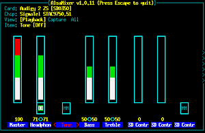

Alsamixer
Dieser Artikel wurde für die folgenden Ubuntu-Versionen getestet:
Dieser Artikel ist größtenteils für alle Ubuntu-Versionen gültig.
Zum Verständnis dieses Artikels sind folgende Seiten hilfreich:
Das Programm alsamixer ist ein Werkzeug, um auf alle Einstellmöglichkeiten zuzugreifen, die ALSA für die Soundkarte zur Verfügung stellt. Häufig sind lediglich Kanäle, auf die man mit den Mixern der X-Oberfläche keinen direkten Zugriff hat, deaktiviert oder heruntergeregelt. Mit Alsamixer kann man den problematischen Regler schnell finden und aktivieren.
Hinweis:
"Alle Regler voll aufdrehen" führt zumeist nicht zum Ziel: man kann damit auch Regler aktivieren, die eine Soundausgabe verhindern. Gebraucht wird eine sinnvolle Einstellung.
Man ruft das Programm mit dem Befehl
alsamixer
im Terminal [1] auf.
Soundkarte ermitteln¶
Falls PulseAudio aktiv ist (was meistens der Fall ist) und/oder mehrere Soundkarten im Rechner verbaut oder angeschlossen sind, so muss man dem Befehl mitteilen, an welcher ALSA-Adresse die Soundkarte sitzt. Dies ermittelt man mit diesem Befehl:
cat /proc/asound/cards
Eine Ausgabe sieht zum Beispiel so aus:
0 [M1010LT ]: ICE1712 - M Audio Delta 1010LT
M Audio Delta 1010LT at 0xa400, irq 12
1 [Loopback ]: Loopback - Loopback
Loopback 1
2 [NVidia ]: HDA-Intel - HDA NVidia
HDA NVidia at 0xfdf88000 irq 18
3 [CX8801 ]: CX88x - Conexant CX8801
Conexant CX8801 at 0xfe800000In diesem Beispiel kann man die Karte "HDA-Intel" entweder mit der Nummer oder ihrem Namen ansprechen (beide wurden hier gelb markiert). Der Befehl für Alsamixer sieht folglich so aus:
alsamixer -D hw:2 # oder alsamixer -D hw:NVidia

Bedienung¶
Die Anzeige der Kanalnamen unter den Reglern ist aus Platzgründen verkürzt! Die vollständigen Namen und Optionen sieht man im Terminal links oben.
Alsamixer wird mit der Taste Esc beendet. Dabei speichert Alsamixer die zuvor getroffenen Einstellungen als Grundeinstellung der Soundkarte ab.
Kanalwahl¶
Nach dem Aufruf sieht man im Terminal die Regler der Soundkarte. Um die verschiedenen Kanäle nacheinander auszuwählen, benutzt man die Cursor-Tasten für ← und → .
Zur Lautstärkeregelung des gewählten Kanals benutzt man die Cursor-Tasten für ↑ und ↓ . Falls es mehr Kanäle gibt, als im Terminal dargestellt werden können (das ist meistens der Fall), so sieht man sie, wenn man mit der Cursor-Taste → über den rechten Rand hinaus wandert (die angezeigten Kanäle verschieben sich dadurch nach links).
Muting¶
Ein Kanal kann auch ausgeschaltet (man nennt dies auf denglisch "gemutet") sein. Dies sieht man an der Basis des Reglers: es steht dort MM, statt des üblichen OO für einen angeschalteten Kanal. Einen ausgewählten Kanal schaltet man durch das Drücken der Taste
M ein und aus.
Aufnahme¶
In der Grundeinstellung werden die Wiedergabe-Kanäle (Playback) angezeigt. Will man statt dessen die Kanäle für die Aufnahme (Capture) bearbeiten, so drückt man Tab ⇆ . Drückt man sie ein zweites Mal, so werden die Wiedergabe- und Aufnahmekanäle gleichzeitig dargestellt. Ein drittes Drücken führt wieder zu den Wiedergabe-Kanälen zurück.
Mit der Leertaste lässt sich ein Kanal als Aufnahme-Gerät auswählen.
Schalter¶
Einige Regler sind in Wahrheit Schalter. Diese lassen sich mit M umschalten. Um genau zu sehen, was sich beim Umschalten tut, achte man auf die ausführlichere Beschreibung im Terminal links oben.
SPDIF¶
Die digitale Ausgabe SPDIF (oft als "IEC958" bezeichnet) kann zu Problemen bei der Soundausgabe führen, wenn sie ungewollt aktiviert wurde. Andererseits wird diese Funktion benötigt für HDMI-Anbindungen.
Erweiterte Optionen¶
Natürlich kann alsamixer noch viel mehr, welches man sich in der Manpage dazu durchlesen kann.
Mixer-Reset¶
Will man die Einstellungen wieder auf die Grundeinstellung zurückstellen, so lese man dieses: Sound Problembehebung. Bevor man den Reset durchführt, sollte man Alsamixer beenden.
Equalizer¶
Alsaequal  ist ein LADSPA Plugin basierter EQ für ALSA Mixer und kann über ein Paket hinzugefügt werden:
ist ein LADSPA Plugin basierter EQ für ALSA Mixer und kann über ein Paket hinzugefügt werden:
libasound2-plugin-equal (universe)
 mit apturl
mit apturl
Paketliste zum Kopieren:
sudo apt-get install libasound2-plugin-equal
sudo aptitude install libasound2-plugin-equal
Um den Alsamixer mit den Reglern des Equalizer zu starten, ruft man ihn wie folgt auf:
alsamixer -D equal

- Erstellt mit Inyoka
-
 2004 – 2017 ubuntuusers.de • Einige Rechte vorbehalten
2004 – 2017 ubuntuusers.de • Einige Rechte vorbehalten
Lizenz • Kontakt • Datenschutz • Impressum • Serverstatus -
Serverhousing gespendet von